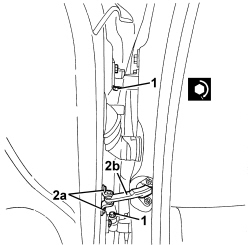
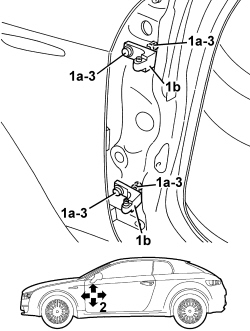
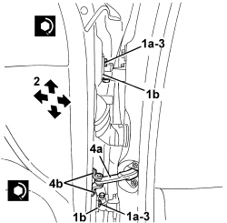

7005A14 FRONT SIDE DOOR - ADJUST CENTERING AND MOULDING - INCLUDES ADAPTATION OF HINGES AND SEALS ON DOOR COMPARTMENT
- Path
- Procedures > 70 FITTINGS > 7005 PASSENGER COMPARTMENT FRONT SIDE DOORS > 7005A FRONT DOOR ASSEMBLY > 7005A14 FRONT SIDE DOOR - ADJUST CENTERING AND MOULDING - INCLUDES ADAPTATION OF HINGES AND SEALS ON DOOR COMPARTMENT
- Kind
- repair procedure (removal / refitting; the operation number is the code)
- Applies to
- all engines; all production periods
- Interactive page
- https://sloeber94.github.io/elrnDB-aBrrSpdr/en/#/946002491
Applies to: all engines; all production periods
 Removing
Removing
 Refitting
RefittingComponent | Fastening | dia | Value (daNm) | Validity |
|---|---|---|---|---|
DOOR HINGE HALF | Bolt | M6x14 | 1.2 ÷ 1.8 |
Op. 7005B14 FRONT SIDE DOOR LOCK STRIKER - R.R
- If necessary, tighten the bolts securing the hinge halves to the door and body.
2. Unscrew opening limiter bolts (2a) and close the door temporarily to return link (2b).

Applies to: all engines; all production periods
- Initially adjust the door within the door compartment. To do this, the bolts securing the hinges to the body must be loosened.
- For the left door upper hinges.
Op. 7040A37 FUSE BOX COVER IN INSTRUMENT PANEL - R.R
Op. 5505A35 MAIN BODY COMPUTER/JUNCTION UNIT - R.R.
- For the right door upper hinges.
Op. 7040A65 CONSOLE SIDE CLOSING (ONE) - R.R.
Op. 7040G20 BULB HOLDER FOR COMPARTMENT LIGHTING IN DASHBOARD - R.R.
Op. 7040A31 DASHBOARD COMPARTMENT ASSEMBLY - R.R.
- For the lower hinges on both doors.
Op. 7040A04 DASHBOARD LOWER TRIM - R.R.
1. Loosen the bolts (1a) securing hinge halves (1b) to the body.
2. Adjust the door position by means of the slotted bolt holes until it is correctly aligned in the compartment.
3. After adjustment, tighten the bolts to the specified torque.
Component | Fastening | dia | Value (daNm) | Validity |
|---|---|---|---|---|
DOOR HINGES TO BODY | Bolt | M8x30 | 2.9 ÷ 3.5 |

Applies to: all engines; all production periods
- Refit the components removed to access the hinge fixing bolts.
Op. 7040A04 DASHBOARD LOWER TRIM - R.R.
Op. 7040A65 CONSOLE SIDE CLOSING (ONE) - R.R.
Op. 7040G20 BULB HOLDER FOR COMPARTMENT LIGHTING IN DASHBOARD - R.R.
Op. 7040A31 DASHBOARD COMPARTMENT ASSEMBLY - R.R.
Op. 7040A37 FUSE BOX COVER IN INSTRUMENT PANEL - R.R
Op. 5505A35 MAIN BODY COMPUTER/JUNCTION UNIT - R.R.
- If necessary, align the door with the wing and rear door as follows.
- Open the door.
1. Loosen the bolts (1a) securing hinges (1b) to the body.
2. Adjust the door position by means of the slotted bolt holes until it is correctly aligned with the wing and rear door.
3. After adjustment, tighten the bolts to the specified torque.
Component | Fastening | dia | Value (daNm) | Validity |
|---|---|---|---|---|
DOOR HINGES | Bolt | M8x30 | 2.9 ÷ 3.5 |
4. Remove link (4a) and tighten bolts (4b) to the specified torque.
Component | Fastening | dia | Value (daNm) | Validity |
|---|---|---|---|---|
DOOR DETENT LINK | Bolt | M6x22 | 0.7 ÷ 1.1 |

Applies to: all engines; all production periods
- Refit and adjust the door striker.
Op. 7005B14 FRONT SIDE DOOR LOCK STRIKER - R.R
- Touch up the paint in the hinge half area.
- Check that the stiker and the door lock are correctly matched and that the alignment is correct with the door closed.
Topics linked from this page (7)
- 5505A35 MAIN BODY COMPUTER/JUNCTION UNIT - R.R.
- 7005B14 FRONT SIDE DOOR LOCK STRIKER - R.R
- 7040A04 DASHBOARD LOWER TRIM - R.R.
- 7040A31 DASHBOARD COMPARTMENT ASSEMBLY - R.R.
- 7040A37 FUSE BOX COVER IN INSTRUMENT PANEL - R.R
- 7040A65 CONSOLE SIDE CLOSING (ONE) - R.R.
- 7040G20 BULB HOLDER FOR COMPARTMENT LIGHTING IN DASHBOARD - R.R.